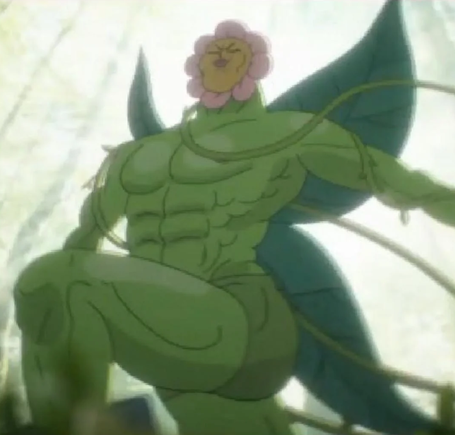

Краса природи
Ромашка — одна з найвідоміших польових квіток. Її білі пелюстки та жовта серединка легко впізнаються і нагадують про тепле літо.
Дізнатися більше
Про ромашку
Зовнішній вигляд
Ромашка має тонке зелене стебло, білі пелюстки та жовту серединку.
Де росте?
Її можна зустріти на луках, полях, узбіччях доріг та в садах.
Цвітіння
Найчастіше ромашки цвітуть у теплу пору року, особливо наприкінці весни та влітку.
Цікаві факти
- Ромашка належить до родини айстрових.
- Квітка добре росте на сонячних місцях.
- Ромашки приваблюють різних комах.
- Білі пелюстки оточують жовту серединку.
Як доглядати за ромашкою?
Обирайте сонячне місце.
Поливайте рослину, коли ґрунт підсихає.
Використовуйте легкий та родючий ґрунт.
Видаляйте сухі квіти, щоб рослина виглядала охайно.